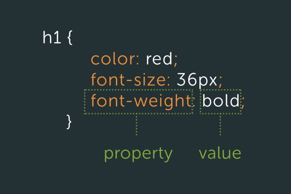

Why do we make Websites?
Websites are made using....
CODE!
What does Code look like?
A Couple things about HTML...

We use tags to make elements.
There are many types of tags and elements, they make up the entire web page.
What languages do you speak?

Right click on the website and select "Inspect Element"
(Discuss and experiement with Dev tools
We use tags to make elements.
There are many types of tags and elements, they make up the entire web page.
There are two main parts to a CSS rule
Selector and Declaration
Also show exmaples of font-family, font-weight, color (trick them), letter-spacing
Property and Value

In the last slide there were several properties and values
CSS chooses the most specific one
Also, rules that you write near the beggining of your CSS are applied to other elements on the page
Let's take a look at an example and see if we can find all of the CSS that has been applied to the HTML
Someone suggest a website!
Time to play a little game! (Basket game!)
We use selectors to target certain elements on the web page
The most basic kind of selector is to target all elements on a page
Notice how you use the same HTML selector, but take away the < >
Well, you would use classes or spans!
A class lets you select a certain chunk of HTML code and change it, (like a whole paragraph!)
A span lets you select one word in a sentence and just change that word.
Here's an example
Look at your HTML file and find a span and a class on the page

Since we know that CSS listens to rules in order, we'll start with some general styles and then do more specific ones later.
In chrome, go to www.colorpicker.com
Which element to target body?
Widths and Heights
Who can explain what a font is?
I'm an example of font!
Pixels - measurment unit, our monitors are measured in pixels
Discuss font family, (backup font)
font-weight
font-size
font-color?
letter-spacing
letter-height
Remember to set pixels, color, and type.
Other than solid, there is also dotted, dashed, and groove
Floats are an important part of CSS that help you align your elements to either the right or the left
What if we want elements to be side by side?
Border-radius allows you to create rounded corners with CSS!
We can even make a circle from a square image
Let's apply some style to the lists